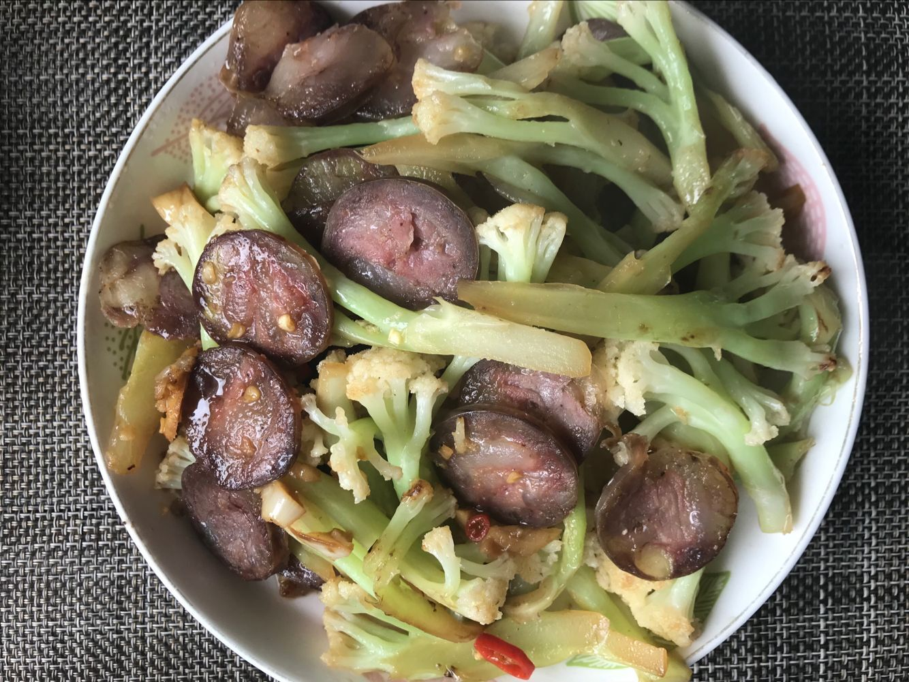
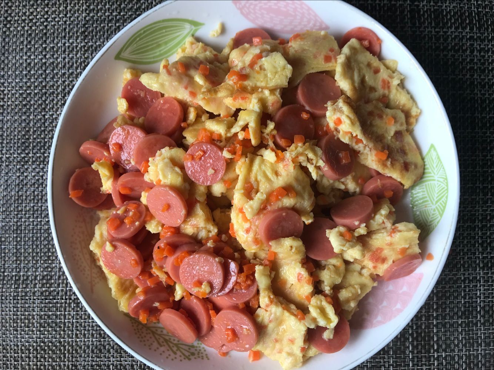

第1(145)周
2018-03-19 15:57:49.126809


1/3 干锅花菜
用散花菜切细块
若是西蓝花得过开水
沥干 沥干 沥干
热油 下锅 煸至略有焦色
加蒜 姜 腊肠 辣椒 继续翻炒
一勺酱油 继续翻炒
加盐 起锅
2/3 “胡萝卜厚蛋烧？“
胡萝卜切片切丝再切末
鸡蛋打散后加入胡萝卜拌匀
胡萝卜不能给太多
不然鸡蛋饼容易开裂
然鹅我给多了，没卷起来
只好做成火腿肠炒鸡蛋:)
3/3 Vue.js
Vue.js——一个易上手的前端框架
已经看完命令部分，接着看组件
和大部分情况一样:
在实践中学习
于是把Vue.js直接引入到项目之中
尝试着一直想做却没时间做的事情——
前后分离，让Vue做数据的前端渲染
后端提供json，并把H5放入缓存
藉此提升项目体验，开新车，遇到两个问题:
1, jinja2和Vue在{{value}}上的冲突
2, 完全Vue意味了需要把base.html拆分成components
和其他部分的component重新组合
这个可以通过vue.router完成
但在当前项目要怎么做的话
需要重构的地方大了去了...
受content management system的启发
开始在自己的域名网站上创建一个数据模型驱动前端页面的东东
它的好处会在重复迭代中得到体现——
快速创建内容页面、检验:)